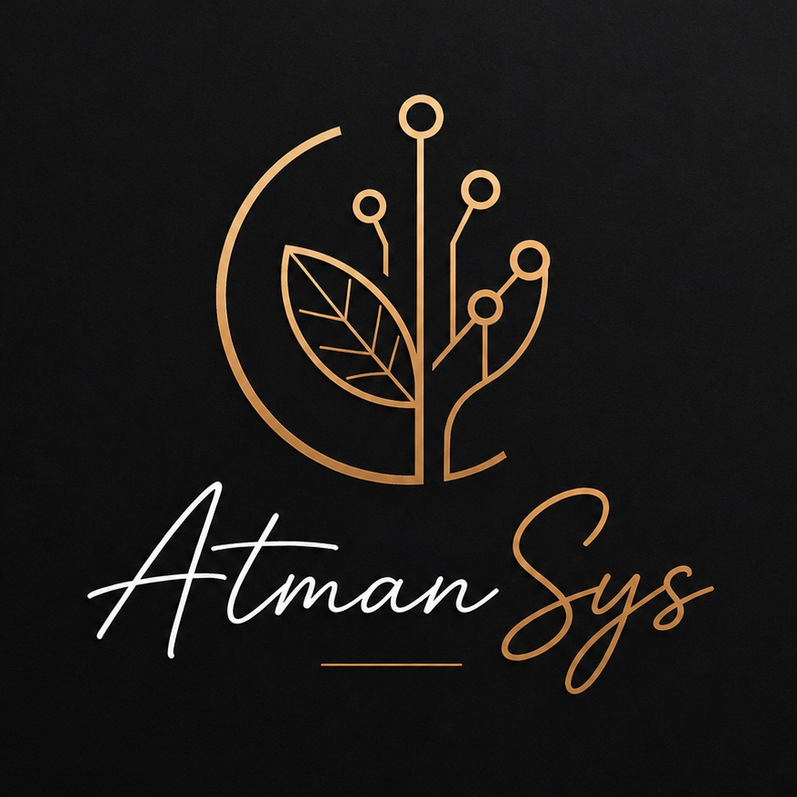

OPTIMIZAMOS TU NEGOCIO.
POTENCIAMOS TU ENERGÍA.
Arquitectura de software a medida y automatización inteligente para transformar la complejidad operativa en rendimiento escalable, sin perder la esencia humana.
En AtmanSys diseñamos ecosistemas digitales robustos que liberan el potencial de tu negocio. No creamos software para acumular líneas de código, sino para devolverte el control de tu tiempo, optimizar tus costes y preparar tu estructura para crecer sin límites.

Servicios diseñados para tu tranquilidad y crecimiento
La tecnología debe adaptarse a tu negocio, y no al revés. Creamos las piezas de software necesarias para que tu operativa diaria fluya sin fricciones.
Desarrollo Web y Apps
Plataformas web y aplicaciones móviles robustas diseñadas para ofrecer una experiencia de usuario sobresaliente y una infraestructura técnica impecable. Creamos herramientas digitales a medida que no solo resuelven tus necesidades actuales, sino que están listas para crecer al ritmo de tu mercado.
Automatización de procesos
Liberamos a tu equipo del trabajo manual y monótono. Conectamos tus herramientas cotidianas e integramos Inteligencia Artificial avanzada para automatizar flujos de trabajo completos, asegurando que la información viaje de forma inteligente, autónoma y libre de errores humanos.
Optimización de tiempo y costes
Analizamos tu estructura de trabajo para identificar cuellos de botella e ineficiencias invisibles que están costando dinero. Rediseñamos tus procesos operativos digitales para reducir costes de ejecución y acelerar los tiempos de entrega.
Integración de sistemas digitales
¿Tus herramientas actuales no se hablan entre sí? Unificamos tus plataformas, bases de datos y software en un ecosistema digital conectado y fluido, integrando APIs de Inteligencia Artificial para que tus sistemas colaboren de forma inteligente y trabajen con datos unificados sin silos de información.
Publicación inteligente y generación de contenidos para la TV Gallega (CRTVG)
El Desafío
La TV Gallega publica diariamente decenas de programas e informativos en su canal de YouTube. Este proceso dependía de un flujo de trabajo lento y manual: para cada vídeo, el equipo debía leer un documento PDF de programación, copiar y pegar a mano los títulos y descripciones, y diseñar de forma individual una imagen de miniatura personalizada (colocando el logotipo del programa y ajustando textos para SEO). Este cuello de botella retrasaba las publicaciones y consumía valiosas horas de trabajo técnico en tareas repetitivas.
La Solución de AtmanSys
Diseñamos y desarrollamos una aplicación inteligente a medida que conecta la API de YouTube con el modelo de Inteligencia Artificial Gemini. El nuevo proceso es automático: al subir el documento PDF de la programación, el sistema analiza el archivo, identifica el programa correspondiente y vincula la información transcribiendo el contenido al vídeo de YouTube. Además, genera automáticamente títulos optimizados para SEO y crea de forma instantánea la imagen de miniatura aplicando el logotipo del programa sobre una plantilla de diseño, publicando el vídeo completo en YouTube sin intervención humana.
Arquitectura técnica con alma humana
Hola, soy Alba Domínguez García, Directora y Desarrolladora Fullstack en AtmanSys. En mi experiencia diseñando sistemas, aprendí una lección fundamental: el código más elegante o la arquitectura más sofisticada no es tan útil si no hace la vida más fácil a quienes los utilizan.
Entiendo la tecnología no como un fin en sí mismo, sino como un puente. Mi enfoque combina la precisión analítica y la visión estructurada del desarrollo con una escucha activa de las necesidades cotidianas de los negocios.
En AtmanSys no implementamos tecnología para impresionar a otros desarrolladores; diseñamos soluciones escalables y humanas. Creemos en la simbiosis perfecta entre lo técnico y lo humano: sistemas estables en segundo plano que te devuelven el control de tu negocio y te regalan la tranquilidad para centrarte en lo que de verdad te inspira.
¿Preparado para diseñar una infraestructura que sostenga tu crecimiento?
Las ineficiencias invisibles en tus flujos de trabajo diario consumen tu tiempo, restan productividad a tu equipo y limitan tus márgenes de beneficio. Hablemos sin prisas y encontremos la mejor manera de optimizar tu operativa.
Reserva una sesión de diagnóstico gratuita (30 minutos)
Analizaremos el estado actual de tu tecnología, detectaremos cuellos de botella y te propondremos soluciones de automatización y arquitectura a medida pensadas para el largo plazo.
Reservar Consultoría Gratuita